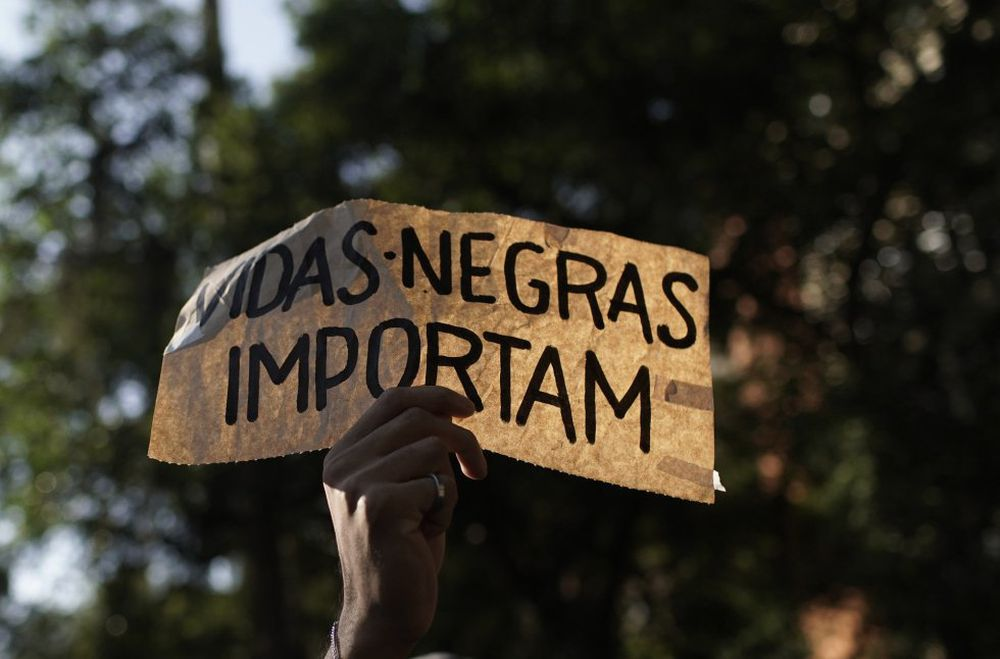

<div class="container">
    <div class="row">
        <div class="col-6">
            
        </div>
        <div class="col-6">
            <h1>Brasil Antirracista</h1>
            <p>Brasil antirracista é uma organização da sociedade civil com mais de 25
                anos de trajetória na defesa e promoção dos direitos dos brasileiros negros.
                Fundada em 1992, a organização atua na construção de uma sociedade onde os
                valores de justiça, equidade, solidariedade são fundamentais.
                Durante quase três décadas, o Brasil Antirracista reafirma que a ação transformadora
                dos negros é essencial para o bem viver de toda a sociedade brasileira.</p>
            <h5>Missão</h5>
            <p> Instrumentalizar adultos, adolescentes e crianças negras para o
                enfrentamento ao racismo, sexismo, lesbofobia e transfobia.
                E para o desenvolvimento de ações voltadas à melhoria das condições de vida da população negra.</p>
            <h5>VISÃO:</h5>
            <p>Buscamos a inserção de negros como agentes de transformação,
                contribuindo para a construção de uma sociedade fundada em valores de justiça,
                equidade e solidariedade, em que a presença e contribuição do negro sejam
                acolhidas como um bem da humanidade.</p>

        </div>
        <div class="row">
            <div class="col-6 mt-5">
                <h3>ATUAÇÃO</h3>
                <h5>As ações do Brasil Antirracista estão voltadas para:</h5>
                <p> - Criação e aplicação de novas tecnologias para a luta políticas de grupos dos negros;<br>
                    - Produção de conhecimento qualificado sobre vidas negras;<br> 
                    - Formação de lideranças negras aptas a elaborar suas agendas de demanda por políticas públicas
                    e a conduzir processos de interlocução com gestores públicos;<br>
                    - Mobilização e ação política sobre setores da sociedade, governos e demais instâncias públicas 
                    pela efetivação de direitos, particularmente o direito à saúde, o acesso à justiça e à equidade de raça</p>
            </div>
            <div class="col-6 mt-5">
                
                
            </div>
        </div>
    </div>
</div>